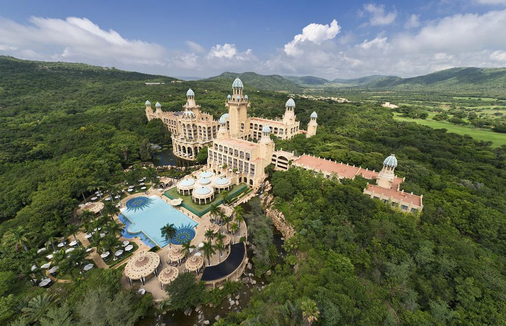
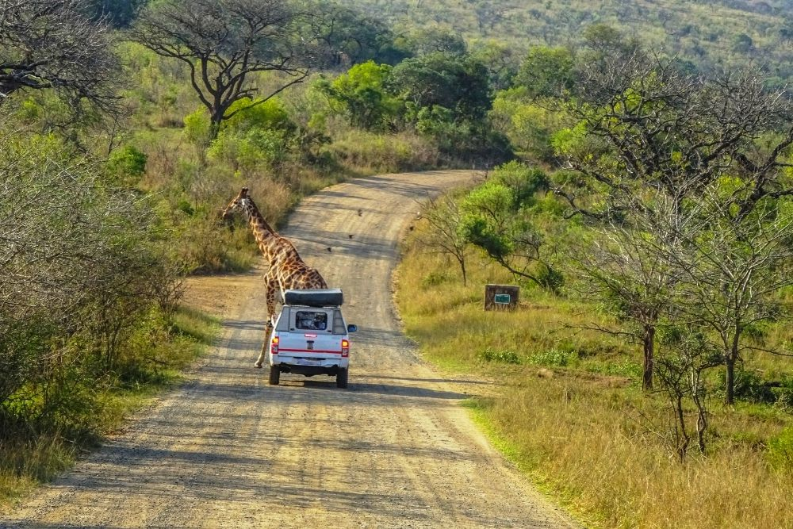
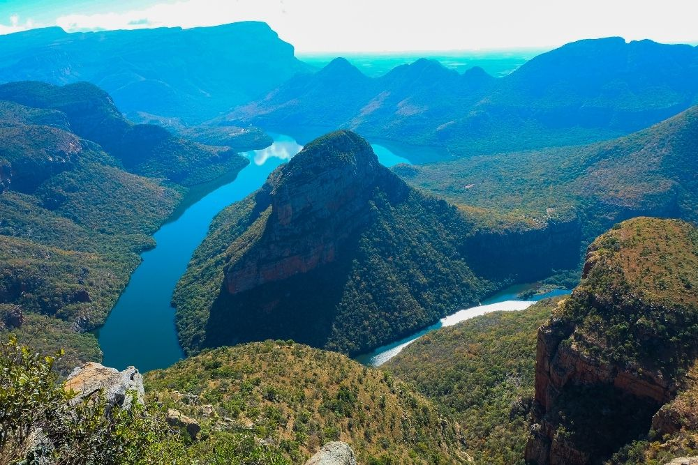
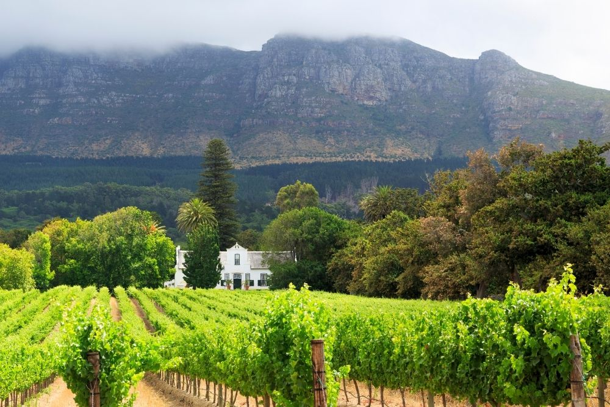

Sun City ResortCunoscuta in intreaga zona drept Regatul placerii din Africa, Sun City Resort este un complex turistic si un cazino de lux, aflat la doua ore de mers cu masina de Johannesburg. Aici se afla patru hoteluri, doua terenuri de golf, doua cazinouri, o asezare culturala incarcata de atmosfera si mai mult de 7000 de crocodili. Rezervatia Pilanesberg din apropiere este cea mai populara rezervatie din Africa de Sud.
|
 |
|  |
Rezervatia Hluhluwe-UmfoloziSingurul parc din KwaZulu Natal unde poti vedea “Marele Cinci” – lei, elefanti, leoparzi, bivoli si rinoceri – Rezervatia Hluhluwe-Umfolozi ofera vizitatorilor sai oportunitati unice de a admira viata salbatica din aceste locuri. Aici poti vedea flora si fauna, in cadrul tururilor cu ghid, dar si pe cont propriu, sau poti opta pentru o experienta unica la bordul unei barci, de-a lungul barajului Hluhluwe. |
Canionul Blyde RiverCanionul Blyde River este al doilea canion ca marime din Africa, dupa Canionul Fish River, dar este mult mai verde, gratie vegetatiei luxuriante subtropicale de aici. Potecile din zona ofera privelisti fantastice ale povarnisurilor, cascadelor si ale fenomenelor geologice stravechi. Vizitatorii au sansa de a se intalni cu cele mai importante cinci specii de animale din Africa de Sud, precum si cu hipopotami si crocodili, in apropiere de tinuturile mlastinoase din Swadini. |
 |
|  |
Podgoriile CapeVaile fertile din Cape sunt inconjurate de munti maiestuosi, orasele linistite, monumente minunate, livezi pline de fructe si se mandresc cu unele dintre cele mai frumoase peisaje din Africa de Sud. Turistii pot urma Drumurile Vinului din Cape, pentru a face cunostinta cu cei mai de seama producatori din tara, ale caror bauturi sunt vestite in intreaga lume, pentru savoarea si eleganta lor. |